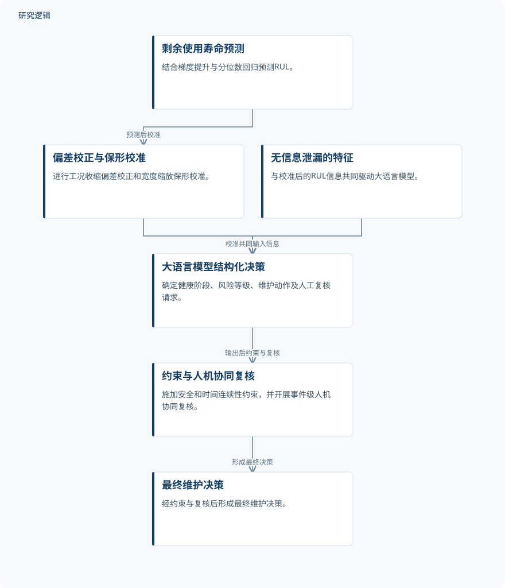

摘要解读
面向轴承预测性维护的可信大语言模型方法
A Trustworthy Large Language Model-Based Method for Bearing Predictive Maintenance
解读更新 2026-11-10 12:01 · 依据公开摘要整理，未核验全文细节
轴承预测性维护不仅要估计“还能用多久”，还要把预测转化为风险判断和可执行的维护行动。这项研究关注大语言模型可能低估风险、输出随时间波动的问题，将寿命预测、决策约束与人工复核连接起来。
文章目录
维护建议为何需要风险与时间约束
大语言模型能够整合多源信息，生成结构化维护建议，但建议能否落地，还取决于风险判断是否充分、前后决策是否连贯。摘要指出，风险低估与输出随时间波动会削弱决策的实际可执行性，本文由此切入轴承预测性维护。
从校准寿命预测走向受约束决策
方法首先结合梯度提升与分位数回归，预测剩余使用寿命（RUL），随后进行工况收缩偏差校正与宽度缩放保形校准。校准后的寿命信息与无信息泄漏的特征共同输入大语言模型，用于确定健康阶段、风险等级、维护动作及人工复核请求。
模型输出并非最终决策：研究随后施加安全约束、时间连续性约束，并引入事件级人机协同复核。摘要还说明，研究与逻辑回归、随机森林进行了比较，并通过跨轴承泛化实验考察对不同轴承的适用性。
依据摘要整理的轴承维护决策流程


仅概括摘要明确陈述的预测、校准、决策与复核关系，不代表论文原图，也不补充未报告的实验配置。
下载 SVG图示关系说明
实线表示相邻阶段的信息流，虚线表示跨阶段联系或反馈。
剩余使用寿命预测 → 偏差校正与保形校准：预测后校准；偏差校正与保形校准 → 大语言模型结构化决策：校准后的RUL信息；无信息泄漏的特征 → 大语言模型结构化决策：共同输入；大语言模型结构化决策 → 约束与人机协同复核：输出后约束与复核；约束与人机协同复核 → 最终维护决策：形成最终决策
摘要报告了整合框架，未给出量化收益
摘要报告的核心成果，是将概率寿命信息、结构化大模型决策、多层约束和人工复核整合为维护决策系统，形成从感知数据到维护决策的端到端路径。作者将其概括为稳定、可靠且可追溯的系统，但摘要没有列出支撑这些评价的具体指标或提升幅度。
样本范围与比较结果仍需查阅正文
仅凭摘要，无法判断轴承样本数量、数据来源、工况覆盖、训练与测试划分，以及无信息泄漏特征的具体构造方式。虽然摘要明确提到基线比较和跨轴承实验，但未报告比较结果、泛化幅度、人工复核负担或实际部署验证范围；这些信息未在摘要中展开，不等于论文没有开展相关工作。
阅读启发：追问可信性如何得到支撑
阅读启发：值得关注的不只是大模型给出什么建议，还包括寿命不确定性如何影响风险判断、约束如何处理前后不一致的输出，以及何种事件触发人工复核。进一步阅读时，可重点核对这些环节的判据与评价证据，并结合传统模型比较，理解大模型在该任务中的适用边界，而非预设它必然更优。
以上为本站阅读启发与建议，不是论文已验证的结论。